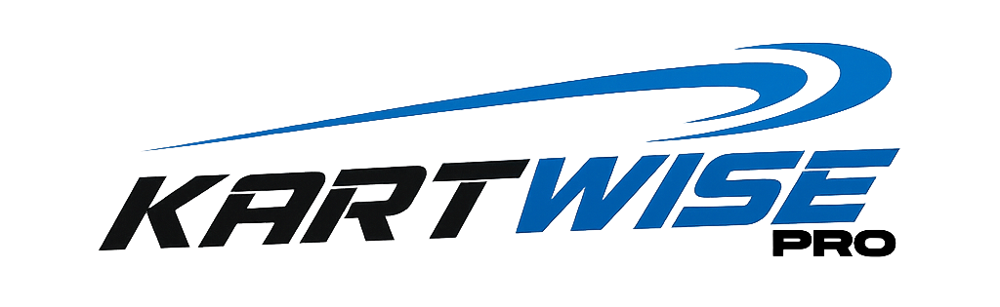

Data is knowledge. Knowledge is power. Power wins races.
We are currently working hard to bring Kartwise Pro to your devices.
In the heat of a race day, every second counts—both on the track and in the pits. Kartwise Pro replaces messy, incomplete paper logs or laborious spreadsheets with a streamlined digital interface built for the speed of competitive karting. No more second-guessing your last tire pressure change or hunting through notebooks for last season's winning jetting. With a few taps, you can capture every critical detail, from engine RPMs to chassis tweaks, ensuring your data is as fast and precise as your driving. •Turn Your Data Into a Podium Finish: Knowledge is only power if you can use it. Kartwise Pro doesn't just store your notes; it analyzes them to reveal the hidden trends that win races. Instantly visualize how track temperature affects your hot pressures or track your engine hours and tire cycles with surgical precision. Whether you’re dialing in for the next session or recalling a proven setup for your favourite track, you'll have the data-driven confidence to make the right call every time. The more you log, the smarter you get—and the harder you are to beat. 30 Day Full Access Free Trial! Build your database for free for 30 days—your data stays with you, even if you don't subscribe.
Contact us: kartwisepro@gmail.com